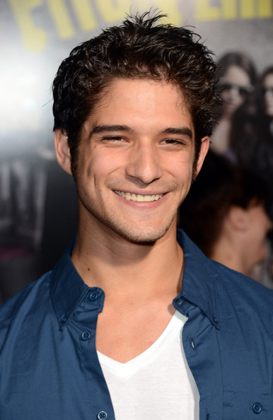
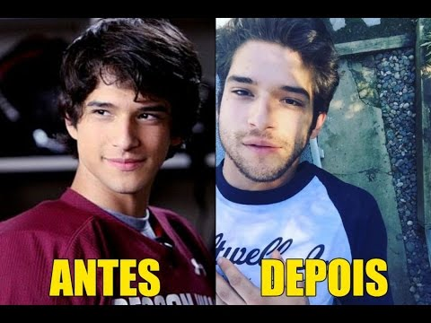

Tyler Posey

.jpg)

Nascido em (Santa Mônica, 18 de outubro de 1991) é um ator e cantor norte-americano, mais conhecido por interpretar Scott McCall por 6 anos a série de televisão Teen Wolf.
De ascendência irlandesa, inglesa e mexicana, Tyler nasceu em Santa Mônica e cresceu em Santa Clarita. Filho de Cyndi Garcia e John Posey, desenvolveu muito cedo um interesse pelas artes. Quando tinha cinco anos, começou a atuar em comerciais e aos seis já estava se apresentando no palco com seu pai, também ator e roteirista, na peça Father, Son, & Holy Coach. Sua mãe morreu em 2014, depois de lutar por mais de quatro anos contra um câncer de mama. Tyler tem dois irmãos, Jesse (mais novo) e Derek (mais velho).
Tyler estudou artes cênicas na Hart High School com Todd Thayler (NY) e Steven Anderson (LA). Estreou diante das câmeras em 2000, quando fez uma rápida aparição no drama Homens de Honra, estrelado por Cuba Gooding Jr. e Robert De Niro. Desde então tem desenvolvido uma carreira próspera na TV e no cinema. De 2001 até 2004, atuou regularmente na série Doc, onde interpretou Raul Garcia.
Em 2002, atuou em Collateral Damage como Mauro, filme estrelado por Arnold Schwarzenegger onde fez o filho adotivo dos personagens de Cliff Curtis e Francesca Neri. No mesmo ano, atuou também na comédia romântica Maid in Manhattan, que tem Jennifer Lopez e Ralph Fiennes como protagonistas. Em 2005, para desempenhar o papel de Abe Wheeler na minissérie Into the West, teve que aprender um pouco do idioma dacota. Em 2006, fez participações como Gabriel Whedon em Brothers & Sisters. No mesmo ano, participou do episódio “Subterrâneo” de Smallville, como um emigrante ilegal do México chamado Javier Ramirez. Em 2007, com dezesseis anos, fez uma audição e disputou com Taylor Lautner o personagem Jacob Black. Em 2009, interpretou Andrew Ortega em sete episódios da quarta temporada de Lincoln Heights. Em 2010, interpretou Billy Barrow no filme Legendary, cujo roteiro foi escrito por seu pai John Posey.
Em 2011, assumiu o papel principal de Scott McCall em Teen Wolf, série baseada no filme homônimo de 1985.
Em 2013, apareceu no filme Scary Movie 5, no papel do personagem Peter.
Tyler também é cantor e compositor. Tocava guitarra e baixo em sua banda Lost In Kostko, formada em 2009. O nome da banda foi depois alterado para Disappearing Jamie até ser extinta.